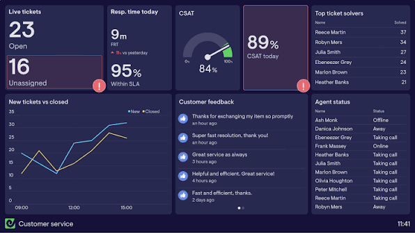
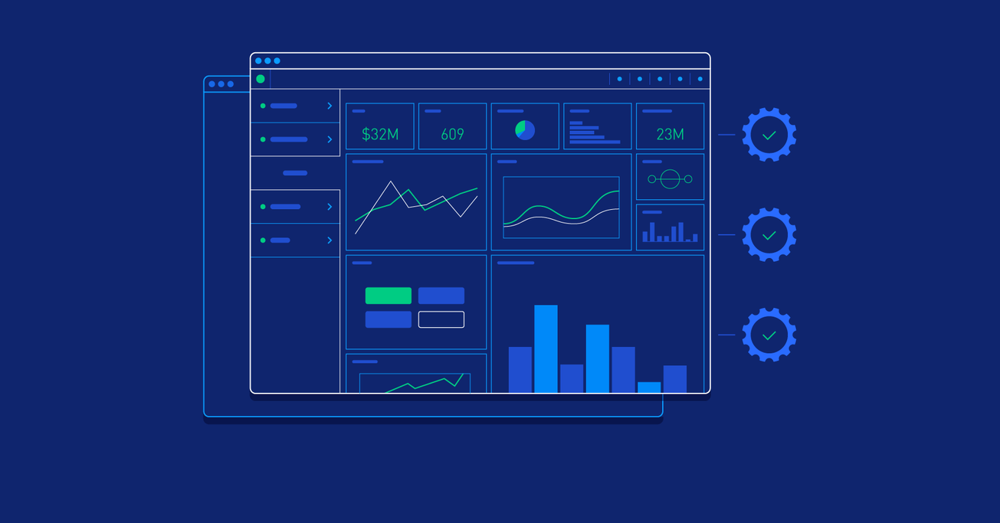

Proyecto 01
Plataforma web responsiva optimizada para conversión y rendimiento riguroso.
Componer, reparar, ordenar. Diseños de identidad y sitios web a la medida, sin plantillas genéricas.
Plataforma web responsiva optimizada para conversión y rendimiento riguroso.
Sistema a medida y arquitectura de marca implementada desde cero.

